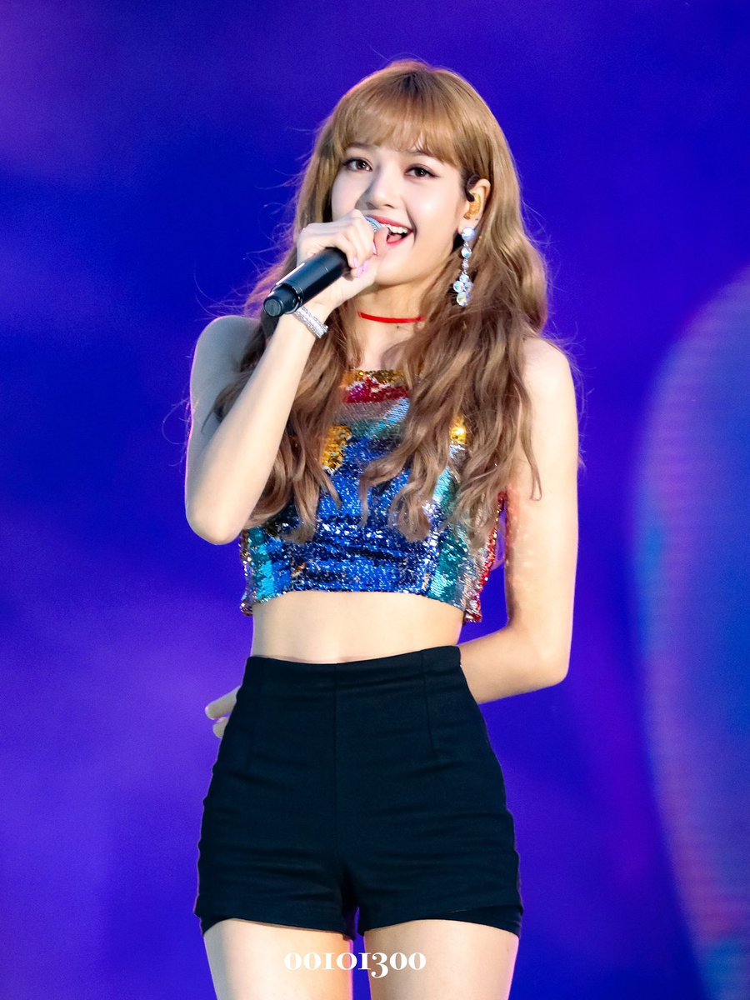
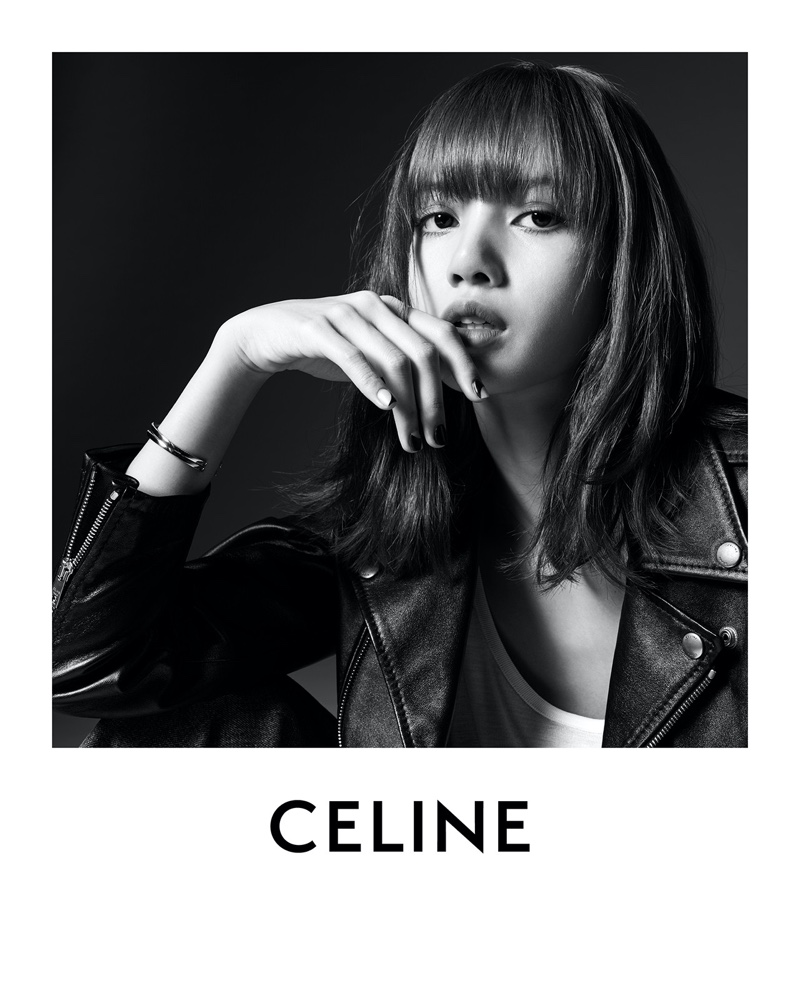

LALISA MANOBAL , popularly known as Lisa, is the lead rapper and main dancer for the popular K-Pop girl group, BLACKPINK.
She started her career at an early age and signed as a trainee with YG Entertainment when she was only 14.
While following her management's strict rules and regulations, she has garnered a huge fan base. She is the first non-Korean artist of YG Entertainment.
The gorgeous rapper who triples as a singer and dancer is of Thai nationality with South Eastern Asian family origins.

The estimated net worth of BLACKPINK Lisa Manoban is more than $16 million.
Lisa is the richest member of BLACKPINK.
An ambitious Lisa went on to enter numerous dance contests including the famous “To Be Number One”. At the peak of her early career engagements, Lisa joined the dance crew “We Zaa Cool” and won uplifting accolades with them too.
2010 was a turning point year for Lisa, who entered YG Entertainment auditions held in Thailand.
She took the first position out of an incredible 4000 applicants that auditioned for the entertainment company.
As a result, YG Entertainment auditions invited Lisa to join the entertainment company in South Korea as a trainee.
Pranpriya Manobal born on March 27, 1997 later changed her name to Lalisa Manobal.
Lisa possesses a likable personality that has makings of the Aries Zodiac sign. She is energetic, playful, action-focused, uncompromising, natural, assertive, and sometimes impulsive.
Notwithstanding, cute little Lisa had the best of upbringing in Thailand's most populous city - Bangkok - where she lived the life of a playful and cheerful kid with contagious smiles and illuminating grins.
By the time Lisa was at the early stage of her conventional education at Praphamontree School 1 and 2, she had already developed interests in singing and dancing as well as admired artists in the South Korean Pop industry such as Big Bang and 2NE1.
On one occasion, she finished as runner-up in the 2019 singing competition themed “Top 3 Good Morals of Thailand”.
With the development, Lisa became the first non-Korean member of YG Entertainment.
Lisa has further worked her way up to become BlackPink's lead rapper, vocalist, and dancer. The rest, as they say, is history.
She trained with the company for five years performing with fellow budding artists like MV Taeyang of 'Big Bang,' Bobby, and Mino of 'YG Entertainment'.
Upon completion of her training in 2016, Lisa was listed as a member of a South Korean girl group called 'BlackPink,' under the label of 'YG Entertainment'. Blackpink debuted with the single album “Square One”.
The album with singles like “Whistle” and “Boombayah” topped all South Korean charts and reached number one on the Billboard world digital song charts.
Fast forward to the time of writing, Lisa is the youngest member of the Blackpink girls' group which also consist of Kim Jennie, Rose, and Kim Jisoo.
She is focused on nurturing her fast-rising career with the BlackPink group, a decision that has been considered wise by many who believe K-pop is a veritable phenomenon that is yet to fully invade the U.S and other first-world countries.
Since debuting with her first solo album, Lisa has set many impressive records on Youtube and also became the first KPOP solo artist to have an MV reach 100 million views in the shortest time.
Moreover, she also earned a record-breaking number of album sales in the history of KPOP female soloists.
Lisa has become the first female K-pop soloist in history to enter the Billboard Pop Radio Airplay Chart.

With this record, BLACKPINK Lisa became the first KPOP female solo singer to earn the title “half-million seller' in the first week of release.
The rest, as they say, is history.
The rapper is focused on nurturing her fast-rising career with the BlackPink group, a decision that has been considered wise by many who believe K-pop is a veritable phenomenon that is yet to fully invade the U.S and other first-world countries.
BVLGARI announced Lisa as New Brand Ambassador For BVLGARI. Lisa is also known as Global Brand Ambassador of CELINE and is colaborating with the Hedi Slimane-helmed luxury house.
Her deals include those with brands like MAC cosmetics, Chivas regal, Prada, brand Moonshot, AIS Thailand, Adidas, D&G Downy, Vivo smartphones, and more.
Lisa won the title of 'Most Beautiful Face of 2021'. She has ranked no. 1 in the list. And the list of the most beautiful faces in the world is released by 'TC Candler' on an annual basis.
Lalisa Manoban came from a decent wealthy family from Buriram, Thailand. When she was young, her father separated from them. Lisa's biological parents' names have not been released out in the public.
As Lisa is an only child, she was raised by her Thai mother and Swiss stepfather.
Added to Lisa's impressive persona is her shrewd nature of not revealing more than necessary when discussing her private and personal life.
Her interests and hobbies include shopping, photography, modeling, traveling, and spending a good time with friends and family.